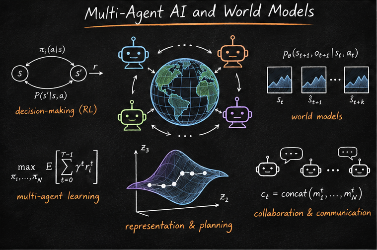

International Laboratory on Learning Systems
We study how machines learn, when their predictions can be trusted, and how they can support decisions in the real world.

Scientific programme
Research directions
Four questions about the foundations and uses of learning systems.

Foundations of Machine Learning
When can a model make reliable predictions on data it has never seen?

Trustworthy Generative AI
How can we check the evidence behind a generated answer?

Multi-Agent AI and World Models
How do agents coordinate when each sees only part of the world?

AI for Healthcare Systems
Will a clinical model still work at another hospital, on another scanner or for another population?

The laboratory
A shared lab in Montréal
Founded in 2022, ILLS brings researchers from France and Québec together at ÉTS. They study how machines make decisions in real time and how autonomous systems respond when conditions change. Their work brings signal processing and machine learning to questions in speech, language and computer vision.
Leadership
Pablo Piantanida is the Director of ILLS and Mark Coates is the Co-Director.
Core Partner Institutions


Associated Partner Institutions
Québec, Canada

Support Partners Institutions
Québec, Canada

France

Visit and contact
Montréal office
École de technologie supérieurePavillon F, 5th floor
1132 rue William
Montréal, Québec H3C 1P8, Canada